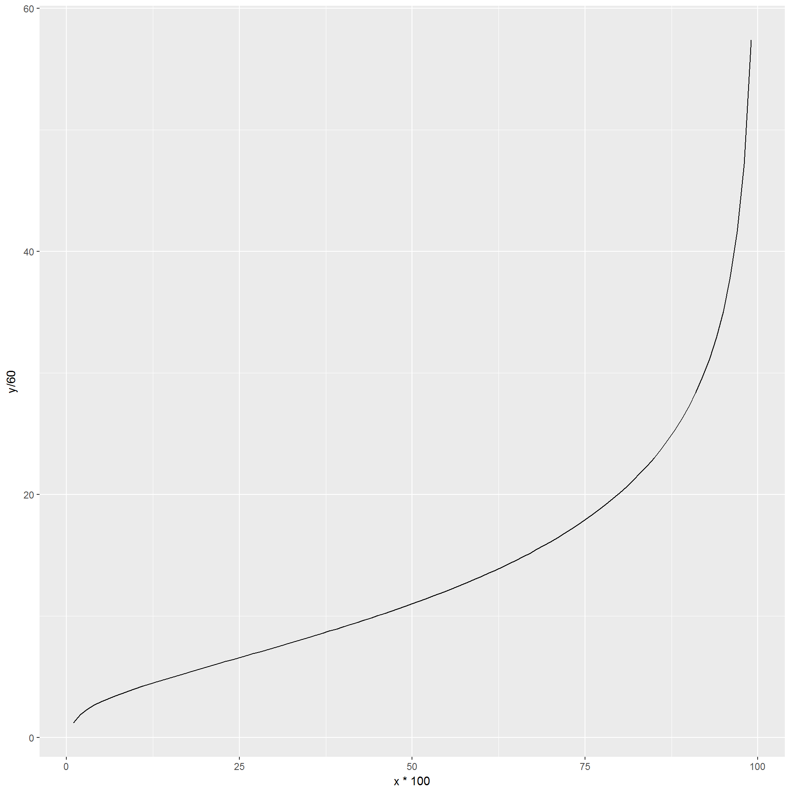
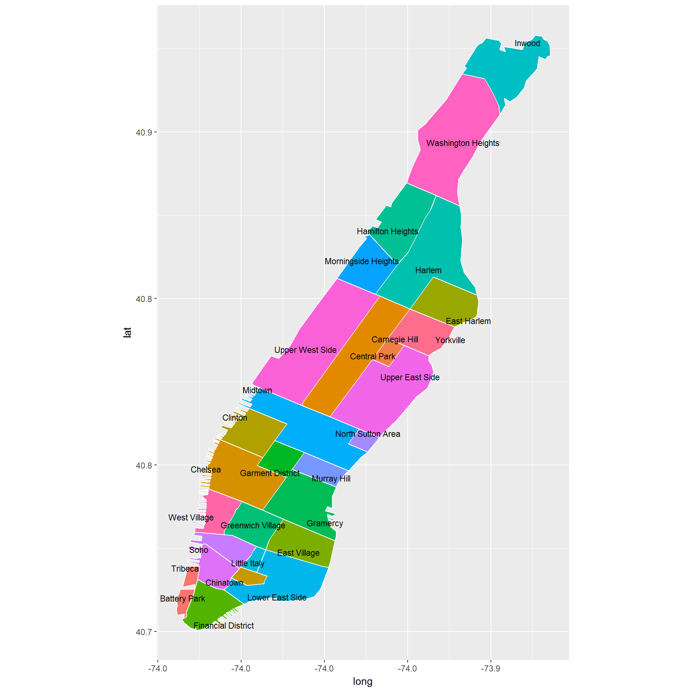

4 Creating new features
Feature creation and feature selection are can be some of the most time-consuming part of model-building. It is often the place where the interplay between technical knowledge (for example about the models we intend to build) and business or domain knowledge (data requirements and how the analysis will be put to use) is at the forefront.
Let’s review our workflow so far:
- load all the data (and combine them if necessary)
- inspect the data in preparation cleaning it
- clean the data in preparation for analysis
- add any interesting features or columns as far as they pertain to the analysis
- find ways to analyze or summarize the data and report your findings
4.0.1 Exercises
Features extraction is the process of creating new (and interesting) columns in our data out of the existing columns. Sometimes new features can be directly extracted from one of several columns in the data. For example, we can extract the day of the week from pickup_datetime and dropoff_datetime. Sometimes new features rely on third-party data. For example, we could have a holiday_flag column to know which dates were holidays.
Let’s take a look at the data as it now stands.
head(nyc_taxi)## # A tibble: 6 × 17
## pickup_datetime dropoff_datetime passenger_count trip_distance pickup_longitude
## <dttm> <dttm> <int> <dbl> <dbl>
## 1 2016-06-21 21:33:52 2016-06-21 21:34:40 5 0.40 -74
## 2 2016-06-08 09:52:19 2016-06-08 10:19:55 1 5.20 -74
## 3 2016-06-14 23:27:22 2016-06-14 23:35:05 1 2.10 -74
## 4 2016-06-12 20:13:12 2016-06-12 20:18:53 5 2.23 -74
## 5 2016-06-10 23:40:21 2016-06-11 00:05:14 3 2.72 -74
## 6 2016-06-28 16:46:23 2016-06-28 16:54:57 1 1.30 -74
## pickup_latitude rate_code_id dropoff_longitude dropoff_latitude payment_type
## <dbl> <fctr> <dbl> <dbl> <fctr>
## 1 40.7 standard -74 40.7 card
## 2 40.8 standard -74 40.8 cash
## 3 40.7 standard -74 40.7 card
## 4 40.8 standard -74 40.8 card
## 5 40.7 standard -74 40.7 card
## 6 40.7 standard -74 40.7 cash
## fare_amount extra mta_tax tip_amount tolls_amount improvement_surcharge total_amount
## <dbl> <dbl> <dbl> <dbl> <dbl> <dbl> <dbl>
## 1 3.0 0.5 0.5 0.86 0 0.3 5.16
## 2 21.5 0.0 0.5 0.00 0 0.3 22.30
## 3 9.0 0.5 0.5 1.50 0 0.3 11.80
## 4 8.0 0.5 0.5 2.79 0 0.3 12.09
## 5 17.0 0.5 0.5 3.66 0 0.3 21.96
## 6 7.5 1.0 0.5 0.00 0 0.3 9.30Discuss possible ‘features’ (columns) that we can extract from already existing columns. Recall that our goal is to tell interesting (unexpected, or not immediately obvious) stories based on the data, so think of features that would make this dataset more interesting to analyze and the story more compelling.
4.1 Date and time features
The first set of features we extract are date and time related features. Specifically, we would like to know the day of the week and the time of the day (based on our own cutoffs).
library(dplyr)
library(lubridate)
weekday_labels <- c('Sun', 'Mon', 'Tue', 'Wed', 'Thu', 'Fri', 'Sat')
cut_levels <- c(1, 5, 9, 12, 16, 18, 22) # used to bucket hour of day into
hour_labels <- c('1AM-5AM', '5AM-9AM', '9AM-12PM', '12PM-4PM', '4PM-6PM', '6PM-10PM', '10PM-1AM')
nyc_taxi <- mutate(nyc_taxi,
pickup_hour = addNA(cut(hour(pickup_datetime), cut_levels)),
pickup_dow = factor(wday(pickup_datetime), levels = 1:7, labels = weekday_labels),
dropoff_hour = addNA(cut(hour(dropoff_datetime), cut_levels)),
dropoff_dow = factor(wday(dropoff_datetime), levels = 1:7, labels = weekday_labels),
trip_duration = as.integer(as.duration(dropoff_datetime - pickup_datetime))
)
levels(nyc_taxi$pickup_hour) <- hour_labels
levels(nyc_taxi$dropoff_hour) <- hour_labels
head(nyc_taxi)## # A tibble: 6 × 22
## pickup_datetime dropoff_datetime passenger_count trip_distance pickup_longitude
## <dttm> <dttm> <int> <dbl> <dbl>
## 1 2016-06-21 21:33:52 2016-06-21 21:34:40 5 0.40 -74
## 2 2016-06-08 09:52:19 2016-06-08 10:19:55 1 5.20 -74
## 3 2016-06-14 23:27:22 2016-06-14 23:35:05 1 2.10 -74
## 4 2016-06-12 20:13:12 2016-06-12 20:18:53 5 2.23 -74
## 5 2016-06-10 23:40:21 2016-06-11 00:05:14 3 2.72 -74
## 6 2016-06-28 16:46:23 2016-06-28 16:54:57 1 1.30 -74
## pickup_latitude rate_code_id dropoff_longitude dropoff_latitude payment_type
## <dbl> <fctr> <dbl> <dbl> <fctr>
## 1 40.7 standard -74 40.7 card
## 2 40.8 standard -74 40.8 cash
## 3 40.7 standard -74 40.7 card
## 4 40.8 standard -74 40.8 card
## 5 40.7 standard -74 40.7 card
## 6 40.7 standard -74 40.7 cash
## fare_amount extra mta_tax tip_amount tolls_amount improvement_surcharge total_amount
## <dbl> <dbl> <dbl> <dbl> <dbl> <dbl> <dbl>
## 1 3.0 0.5 0.5 0.86 0 0.3 5.16
## 2 21.5 0.0 0.5 0.00 0 0.3 22.30
## 3 9.0 0.5 0.5 1.50 0 0.3 11.80
## 4 8.0 0.5 0.5 2.79 0 0.3 12.09
## 5 17.0 0.5 0.5 3.66 0 0.3 21.96
## 6 7.5 1.0 0.5 0.00 0 0.3 9.30
## pickup_hour pickup_dow dropoff_hour dropoff_dow trip_duration
## <fctr> <fctr> <fctr> <fctr> <int>
## 1 6PM-10PM Tue 6PM-10PM Tue 48
## 2 5AM-9AM Wed 9AM-12PM Wed 1656
## 3 10PM-1AM Tue 10PM-1AM Tue 463
## 4 6PM-10PM Sun 6PM-10PM Sun 341
## 5 10PM-1AM Fri 10PM-1AM Sat 1493
## 6 12PM-4PM Tue 12PM-4PM Tue 514dp <- data.frame(x = seq(.01, .99, by = .01))
dp$y <- quantile(nyc_taxi$trip_duration, p = dp$x, na.rm = TRUE)
ggplot(aes(y = y/60, x = x*100), data = dp) +
geom_line()
4.2 Geographical features
The next set of features we extract from the data are geographical features, for which we load the following geospatial packages:
library(rgeos)
library(sp)
library(maptools)It is common to store GIS data in R into shapefiles. A shapefile is essentially a data object that stores geospatial informaiton such as region names and boundaries where a region can be anything from a continent to city neighborhoods. The shapefile we use here was provided by Zillow.com and can be found here. It is a shapefile for the state of New York, and it contains neighborhood-level information for New York City.
nyc_shapefile <- readShapePoly('ZillowNeighborhoods-NY/ZillowNeighborhoods-NY.shp')We can see what sort of information is available by peeking at nyc_shapefile@data:
head(nyc_shapefile@data, 10)## STATE COUNTY CITY NAME REGIONID
## 0 NY Monroe Rochester Ellwanger-Barry 343894
## 1 NY New York New York City-Manhattan West Village 270964
## 2 NY Kings New York City-Brooklyn Bensonhurst 193285
## 3 NY Erie Buffalo South Park 270935
## 4 NY New York New York City-Manhattan East Village 270829
## 5 NY Albany Albany Park South 342684
## 6 NY Onondaga Syracuse Meadowbrook 274481
## 7 NY Queens New York City-Queens Auburndale 270797
## 8 NY Richmond New York City-Staten Island Rosebank 197599
## 9 NY Onondaga Syracuse Downtown 273487The data stores information about neighborhoods under the column NAME. Since we have longitude and latitude for pick-up and drop-off location, we can use the above data set to find the pick-up and drop-off neighborhoods for each cab ride. To keep the analysis simple, we limit the data to Manhattan only, where the great majority of cab rides take place.
nyc_shapefile <- subset(nyc_shapefile, COUNTY == 'New York') # limit the data to Manhattan onlyNotice that even though nyc_shapefile is not a data.frame, subset still worked. This is because subset is a function that works on more than just one kind of input. Quite a few R functions are the same way, such as plot and predict.
With a bit of work, we can plot a map of the whole area, showing the boundaries separating each neighborhood. We won’t go into great detail on how the plots are generated, as it would derail us from the main topic.
library(ggplot2)
nyc_shapefile@data$id <- as.character(nyc_shapefile@data$NAME)
nyc_points <- fortify(gBuffer(nyc_shapefile, byid = TRUE, width = 0), region = "NAME") # fortify neighborhood boundariesAs part of the code to create the plot, we use dplyr to summarize the data and get median coordinates for each neighborhood, but since we revisit dplyr in greater depth in the next section, we skip the explanation for now.
library(dplyr)
nyc_df <- inner_join(nyc_points, nyc_shapefile@data, by = "id")
nyc_centroids <- summarize(group_by(nyc_df, id), long = median(long), lat = median(lat))
library(ggrepel)
library(ggplot2)
ggplot(nyc_df) +
aes(long, lat, fill = id) +
geom_polygon() +
geom_path(color = "white") +
coord_equal() +
theme(legend.position = "none") +
geom_text_repel(aes(label = id), data = nyc_centroids, size = 3)
We now go back to the data to find the neighborhood information based on the pick-up and drop-off coordinates. We store pick-up longitude and latitude in a separate data.frame, replacing NAs with zeroes (the function we’re about to use doesn’t work with NAs). We then use the coordinates function to point to the columns that correspond to the geographical coordinates. Finally, we use the over function to find the region (in this case the neighborhood) that the coordinates in the data fall into, and we append the neighborhood name as a new column to the nyc_taxi dataset.
data_coords <- data.frame(
long = ifelse(is.na(nyc_taxi$pickup_longitude), 0, nyc_taxi$pickup_longitude),
lat = ifelse(is.na(nyc_taxi$pickup_latitude), 0, nyc_taxi$pickup_latitude)
)
coordinates(data_coords) <- c('long', 'lat') # we specify the columns that correspond to the coordinates
# we replace NAs with zeroes, becuase NAs won't work with the `over` function
nhoods <- over(data_coords, nyc_shapefile) # returns the neighborhoods based on coordinates
nyc_taxi$pickup_nhood <- nhoods$NAME # we attach the neighborhoods to the original data and call it `pickup_nhood`We can use table to get a count of pick-up neighborhoods:
head(table(nyc_taxi$pickup_nhood, useNA = "ifany"))##
## 19th Ward Abbott McKinley Albright Allen Annandale
## 0 0 0 0 0
## Arbor Hill
## 0We now repeat the above process, this using drop-off coordinates this time to get the drop-off neighborhood.
data_coords <- data.frame(
long = ifelse(is.na(nyc_taxi$dropoff_longitude), 0, nyc_taxi$dropoff_longitude),
lat = ifelse(is.na(nyc_taxi$dropoff_latitude), 0, nyc_taxi$dropoff_latitude)
)
coordinates(data_coords) <- c('long', 'lat')
nhoods <- over(data_coords, nyc_shapefile)
nyc_taxi$dropoff_nhood <- nhoods$NAMEAnd since data_coords and nhoods are potentially large objects, we remove them from our session when they’re no longer needed.
rm(data_coords, nhoods) # delete these objects, as they are no longer neededNote how we had to repeat the same process in two different steps, once to get pick-up and once to get drop-off neighborhoods. Now if we need to change something about the above code, we have to change it in two different places. For example, if we want to reset the factor levels so that only Manhattan neighborhoods are showing, we need to remember to do it twice.
Another downside is we ended up with leftover objects data_coords and nhood. Since both objects have the same number of rows as the nyc_taxi dataset, they are relatively large objects, so we manually deleted them from the R session using rm after we finished using them. Carrying around too many by-product objects in the R session that are no longer needed can result in us clogging the memory, especially if the objects take up a lot of space. So we need to be careful and do some housecleaning every now and then so our session remains clean. Doing so is easier said than done.
There is however something we can do to avoid both of the above headaches: wrap the process into an R function.
4.2.1 Exercises
- Conceptually describe the function we described in the above section, in other words
- what would be the input(s) to the function?
- what would the function return as output?
- what are the intermediate results that are created by the function?
- Here’s a basic user-defined R function:
p <- 5
do.something <- function(n, d) {
m <- n + p
return(m/d)
}- What is the name of the function?
- What are the function’s arguments?
- What are the local and global variables?
- What is the “body” of the function?
- What does the function return?
- What happens to
mandd(local variables) once the function finishes running?
Try to predict what the function returns in the two cases here:
do.something(10, 3)## [1] 5p <- 8
do.something(10, 3)## [1] 6- Change the above function so that
pis always 5 for the function. There is more than one way to do this.
4.2.2 Solutions
Here’s the solution to part (3). As we mentioned, there’s more than one way of doing this. One way is to turn p into an argument for the function do.something, with the default value set to 5.
do.something <- function(n, d, p = 5) {
m <- n + p
return(m/d)
}Another approach is to make p a local variable, instead of a global variable. When the function runs, regardless of what p is assigned to globally, p will always be assigned the value 5 in the function’s environment.
do.something <- function(n, d) {
p <- 5
m <- n + p
return(m/d)
}
p <- 8
do.something(10, 3)## [1] 54.3 Creating a function
With the last exercise as introduction, believe it or not, we know everything we need to know to accomplish the automation task we set out to do. We already have the bulk of the code that the function relies on, so it’s often a matter of pasting it into the body of the function and making some minor changes. To write good functions, we often begin by writing code that works, then we identify the need for automation (to reuse code, to automatically clean intermediate results), and finally we wrap the code around a function and modify and test it to make sure it still works.
Of course writing good functions can be more involved than what we described here. This is especially so when we write functions that we intend to use across multiple projects or share with others. In such cases, we often spend more time anticipating all the ways that the function could break given different inputs and try to account for such cases.
With the last exercise as a backdrop, let’s now delete pickup_nhood and dropoff_nhood from the data and recreate those columns, this time by writing a function.
nyc_taxi$pickup_nhood <- NULL # we drop this column so we can re-create it here
nyc_taxi$dropoff_nhood <- NULL # we drop this column so we can re-create it here4.3.1 Exercises
Here is our earlier code for appending neighborhood information (drop-off in this case) to the data using the shapefile. Wrap this code around a new function. Let’s call the function add.neighborhoods. Assign the function the correct inputs (think about what those need to be) and modify the code itself so the function takes those inputs and produces the correct output (think about what that needs to be). Once you have your function, run it twice, once to get pick-up neighborhood and once to get drop-off neighborhood.
data_coords <- data.frame(
long = ifelse(is.na(nyc_taxi$dropoff_longitude), 0, nyc_taxi$dropoff_longitude),
lat = ifelse(is.na(nyc_taxi$dropoff_latitude), 0, nyc_taxi$dropoff_latitude)
)
coordinates(data_coords) <- c('long', 'lat')
nhoods <- over(data_coords, nyc_shapefile)
nyc_taxi$dropoff_nhood <- nhoods$NAME4.3.2 Solution
We call the function add.neighborhoods. Its inputs are the dataset, the names of the longitude and latitude coordinates (as strings), and the shapefile. The output we return is a single column containing the neighborhoods names.
add.neighborhoods <- function(long_var, lat_var, shapefile) {
require(rgeos)
require(maptools)
data_coords <- data.frame(long = ifelse(is.na(long_var), 0, long_var),
lat = ifelse(is.na(lat_var), 0, lat_var)) # create `data.frame` with only those two columns
coordinates(data_coords) <- c('long', 'lat') # designate the columns as geographica l coordinates
nhoods <- over(data_coords, shapefile) # find the neighborhoods the coordinates fall into
nhoods$NAME <- factor(nhoods$NAME, levels = as.character(shapefile@data$NAME)) # reset factor levels to Manhattan only
return(nhoods$NAME) # return only the column with the neighborhoods
}We can now use our function twice. Once to find the pick-up neighborhood:
nyc_taxi$pickup_nhood <- add.neighborhoods(nyc_taxi$pickup_longitude, nyc_taxi$pickup_latitude, nyc_shapefile)
table(nyc_taxi$pickup_nhood, useNA = "ifany")##
## West Village East Village Battery Park Carnegie Hill
## 140332 204170 55599 69672
## Gramercy Soho Murray Hill Little Italy
## 466436 119095 200315 50010
## Central Park Greenwich Village Midtown Morningside Heights
## 80785 270512 972293 28971
## Harlem Hamilton Heights Tribeca North Sutton Area
## 30857 11817 97612 59162
## Upper East Side Financial District Inwood Chelsea
## 815312 126715 619 397915
## Lower East Side Chinatown Washington Heights Upper West Side
## 139292 18155 7712 494749
## Clinton Yorkville Garment District East Harlem
## 177426 39669 349100 18737
## <NA>
## 556961And a second time to find the drop-off neighborhood:
nyc_taxi$dropoff_nhood <- add.neighborhoods(nyc_taxi$dropoff_longitude, nyc_taxi$dropoff_latitude, nyc_shapefile)
table(nyc_taxi$dropoff_nhood, useNA = "ifany")##
## West Village East Village Battery Park Carnegie Hill
## 126134 181670 57527 77552
## Gramercy Soho Murray Hill Little Italy
## 428740 113317 198077 36578
## Central Park Greenwich Village Midtown Morningside Heights
## 71733 218430 914279 45488
## Harlem Hamilton Heights Tribeca North Sutton Area
## 70489 24468 90444 47733
## Upper East Side Financial District Inwood Chelsea
## 772333 132628 5436 358347
## Lower East Side Chinatown Washington Heights Upper West Side
## 119798 17240 35333 489991
## Clinton Yorkville Garment District East Harlem
## 188263 66955 288773 38368
## <NA>
## 7838764.3.3 Exercises
Let’s revisit the function we defined in the last exercise:
p <- 5
do.something <- function(n, d) {
m <- n + p
m/d
}Is the function “vectorized”? i.e. if the input(s) is a vector are the outputs also vectors? Show by example. This question is not trivial, because vectorized functions can be used directly for column transformations (after all, columns in a
data.frameare just vectors).Based on what we learned about vectorized functions, is the
ifelsefunction vectorized? what aboutifandelse? Once again answer the question using examples for each.
4.3.4 Solutions
For part (1) instead of feeding single numbers as inputs to the function, we try an integer vector instead. Since the function has two inputs, we can try an integer vector as the first input (and singleton as the second), vice versa, or integer vectors for both inputs.
do.something(10, 3) # singleton inputs## [1] 5do.something(1:10, 3) # first input is a vector, output is also a vector## [1] 2.00 2.33 2.67 3.00 3.33 3.67 4.00 4.33 4.67 5.00do.something(1:10, seq(1, 20, by = 2)) # both inputs are vectors, as is the output## [1] 6.000 2.333 1.600 1.286 1.111 1.000 0.923 0.867 0.824 0.789For part (2), here’s how we can show that ifelse is vectorized:
ifelse(2 > 1, 55, 0) # singleton condition and output## [1] 55ifelse(0:5 > 1, 55, 0) # condition is vector, so is the output## [1] 0 0 55 55 55 55ifelse(0:5 > 1, letters[1:6], LETTERS[1:6]) # all inputs are vectors, so is the output## [1] "A" "B" "c" "d" "e" "f"However, if and else are not vectorized functions, as can be seen by the following example:
if(2 > 1) 55 else 0 # singleton condition works fine## [1] 55if(0:5 > 1) 55 else 0 # vector of conditions does not work (only the first element) is considered## [1] 0This means that we generally use ifelse when we need to transform the data (e.g. create a new column) based on conditional statements, whereas we use if and else when we need to check a single condition, such as this:
if(length(dir(data_dir)) < 1) {
warning(sprintf("%s folder seems empty!", data_dir))
} else {
dir(data_dir)
}## [1] "NYC_sample.csv" "yellow_tripsample_2016-01.csv"
## [3] "yellow_tripsample_2016-02.csv" "yellow_tripsample_2016-03.csv"
## [5] "yellow_tripsample_2016-04.csv" "yellow_tripsample_2016-05.csv"
## [7] "yellow_tripsample_2016-06.csv"4.4 Tipping behavior
We now calculate the tipping percentage for every trip.
nyc_taxi <- mutate(nyc_taxi, tip_percent = as.integer(tip_amount / (tip_amount + fare_amount) * 100))The percentage for people who tipped nothing is a bit suspicious. The above table is useful, but it might be easier for us to see the distribution if we plot the histogram. And since there’s a good chance that method of payment affects tipping, we break up the histogram by payment_type.
dp <- data.frame(x = seq(.01, .99, by = .01))
dp$y <- quantile(nyc_taxi$tip_percent, p = dp$x, na.rm = TRUE)
ggplot(aes(y = y, x = x*100), data = dp) +
geom_line()
library(ggplot2)
ggplot(data = nyc_taxi) +
geom_histogram(aes(x = tip_percent), binwidth = 1) + # show a separate bar for each percentage
facet_grid(payment_type ~ ., scales = "free") + # break up by payment type and allow different scales for 'y-axis'
xlim(c(-1, 31)) # only show tipping percentages between 0 and 30
The histogram confirms what we suspected: tipping is affected by the method of payment. However, it is unlikely to believe that people who pay cash simply don’t tip. A more believable scenario is that cash customers tip too, but their tip does not get recorded into the system as tip. In the next exercise, we try our hand at simulating tipping behavior for cash customers.
Instead of ignoring tip amount for customers who pay cash, or pretending that it’s really zero, in the last exercise we wrote a function that uses a simple rule-based approach to find how much to tipping. In the next exercise, we apply the function to the dataset. But before we do that, let’s use an alternative approach to the rule-based method: Let’s use a statistical technique to estimate tipping behavior, here’s one naive way of doing it:
Since even among card-paying customers, a small proportion don’t tip, we can toss a coin and do as follows:
- With 5 percent probability the customer does not tip
- With 95 percent probability the customer tips, and the tip is a certain percentage of the fare amount and a random component. More specifically, the tip is determined by drawing from a normal distribution centered around 20 percent of the fare amount with a standard deviation of 25 cents.
Here’s how we can apply the above logic to the dataste:
nyc_taxi <- mutate(nyc_taxi,
toss_coin = rbinom(nrow(nyc_taxi), 1, p = .95), # toss a coin
tip_if_heads = rnorm(nrow(nyc_taxi), mean = fare_amount * 0.20, sd = .25),
tip_if_tails = 0, # if tails don't tip
tip_amount =
ifelse(payment_type == 'cash',
ifelse(toss_coin, tip_if_heads, tip_if_tails), # when payment method is cash apply the above rule
ifelse(payment_type == 'card', tip_amount, NA)), # otherwise just use the data we have
tip_percent = as.integer(tip_amount / (tip_amount + fare_amount) * 100), # recalculate tip percentage
toss_coin = NULL, # drop variables we no longer need
tip_if_heads = NULL,
tip_if_tails = NULL
)Let’s visualize the percentage tipped to for card and cash customers now.
library(ggplot2)
ggplot(data = nyc_taxi) +
geom_histogram(aes(x = tip_percent), binwidth = 1) + # show a separate bar for each percentage
facet_grid(payment_type ~ ., scales = "free") + # break up by payment type and allow different scales for 'y-axis'
xlim(c(-1, 31)) # only show tipping percentages between 0 and 30
4.4.1 Exercises
When processing a data.frame with R, vectorized functions show up in many places. Without them, our R code would be more verbose, and often (though not always) less efficient. Let’s look at another example of this by looking at the relationship between tipping and method of payment. Let’s assume that most cash customers tip (but the amount they tip does not show in the data). We further assume that tipping behavior for cash vs card customers is very different in the following way:
- card customers might tip based on a certain percentage (automatically calculated when they swipe)
- cash customers might tip by rounding up (and thereby avoid getting small change)
For example, a card customer could tip 10 percent regardless of the fare amount, but a cash customer whose fare is $4.65 would round up to $6, and if the fare is $26.32 they would round up to $30. So the cash customer’s tip is also proportional to the fare amount, but partly driven by the need to avoid getting change or doing the math. We want to find a way to simulate this behavior.
In other words, we want to write a function that calculates tip by rounding up the fare amount. Writing such a function from scratch is a little tedious. Fortunately, there is already a function in base R to help us:
findInterval(3.66, c(1, 3, 4.5, 6, 10))## [1] 2Take a moment to inspect and familiarize yourself with the above function:
- What does the above function return?
- What are some ways the function could “misbehave”? In other words, check what the function returns when odd inputs are provided, including NAs.
findInterval(NA, c(1, 3, 4.5, 6, 10))## [1] NALet’s break up the above code into two parts:
upper_limits <- c(1, 3, 4.5, 6, 10)
findInterval(3.66, upper_limits)## [1] 2Modify the last line so that we return the first number higher than the number we provide. In this case: the number we provide is 3.66, the first number higher than 3.66 is 4.5, so modify the code to return 4.5 only. (HINT: think of the line as the index to another vector.)
Is the function
findIntervalvectorized? show by example.Wrap the above solution into a function called
round_up_fareand test it with the following input:
sample_of_fares <- c(.55, 2.33, 4, 6.99, 15.20, 18, 23, 44)
round_up_fare(sample_of_fares, upper_limits)Here’s the result we expect to get:
- Replace the statistical approach to simulating
tip_amountfor the cash customers with the rule-based approach implemented in the above function. In the data transformation above (undernyc_taxi <- mutate(...)), replace the linetip_if_heads = rnorm(...)with the transformation corresponding to the rule-based approach, as implemented byround_up_fare. Use the following fare round-up upper limits:
fare_intervals <- c(0:10, seq(12, 20, by = 2), seq(25, 50, by = 5), seq(55, 100, by = 10))
round_up_fare(23, fare_intervals)Run the new transformation and recreate the plot, comment on the new distribution.
4.4.2 Solutions
- We want to return one of the elements of
upper_limits. Which element we return is dynamically determined byfindIntarval, except we need to add 1 to return the upper limit (otherwise the lower limit is returned).
upper_limits[findInterval(0, upper_limits) + 1]## [1] 1- The problem reduces to finding out if
findIntervalis vectorized. We simply feed a vector,1:5in this example, tofindIntervaland make sure that it returns a vector.
upper_limits[findInterval(1:5, upper_limits) + 1]## [1] 3.0 3.0 4.5 4.5 6.0- Once we have the logic figured out, wrapping it into a neat function is usually the easy part. Here the function will default to using
upper_limitunless otherwise specified.
round_up_fare <- function(x, ul = upper_limits) {
upper_limits[findInterval(x, upper_limits) + 1]
}
sample_of_fares <- c(.55, 2.33, 4, 6.99, 15.20, 18, 23, 44)
round_up_fare(sample_of_fares)## [1] 1.0 3.0 4.5 10.0 NA NA NA NA- Just replace
tip_if_heads = rnorm(nrow(nyc_taxi), mean = fare_amount * 0.20, sd = .25)withtip_if_heads = round_up_fare(fare_amount, fare_intervals) - fare_amountand rerun the whole code chunk and the one after it for recreating the plot.
nyc_taxi <- mutate(nyc_taxi,
toss_coin = rbinom(nrow(nyc_taxi), 1, p = .95), # toss a coin
tip_if_heads = round_up_fare(fare_amount, fare_intervals) - fare_amount,
tip_if_tails = 0, # if tails don't tip
tip_amount =
ifelse(payment_type == 'cash',
ifelse(toss_coin, tip_if_heads, tip_if_tails), # when payment method is cash apply the above rule
ifelse(payment_type == 'card', tip_amount, NA)), # otherwise just use the data we have
tip_percent = as.integer(tip_amount / (tip_amount + fare_amount) * 100), # recalculate tip percentage
toss_coin = NULL, # drop variables we no longer need
tip_if_heads = NULL,
tip_if_tails = NULL)
library(ggplot2)
ggplot(data = nyc_taxi) +
geom_histogram(aes(x = tip_percent), binwidth = 1) + # show a separate bar for each percentage
facet_grid(payment_type ~ ., scales = "free") + # break up by payment type and allow different scales for 'y-axis'
xlim(c(-1, 31)) # only show tipping percentages between 0 and 30
It shouldn’t be surprising that the rounding behavior results in a histogram with certain gaps between the bars, especially between the numbers 10 and 20.